Landmark Environmental Events, Crises & Disasters
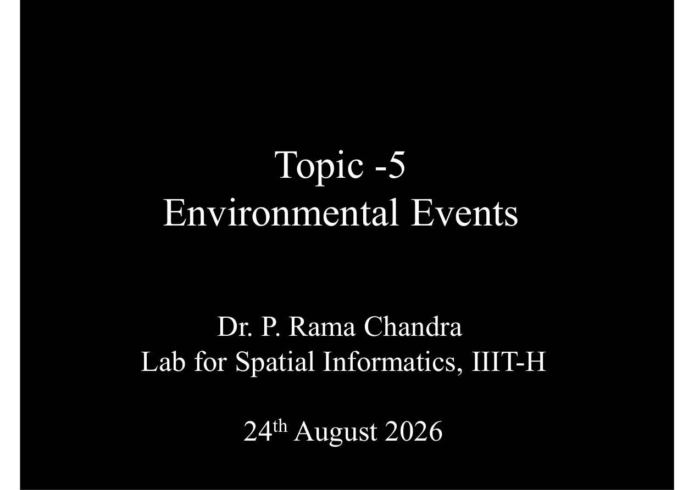
Environmental Crises and Landmark Planetary Events
- •Topic -5 Environmental Events Dr. P. Rama Chandra Lab for Spatial Informatics, IIIT-H
Environmental Crises and Landmark Planetary Events: Topic -5 Environmental Events Dr. P. Rama Chandra Lab for Spatial Informatics, IIIT-H. This material establishes quantitative limits, operational trade-offs, and core exam principles for Lecture 05.
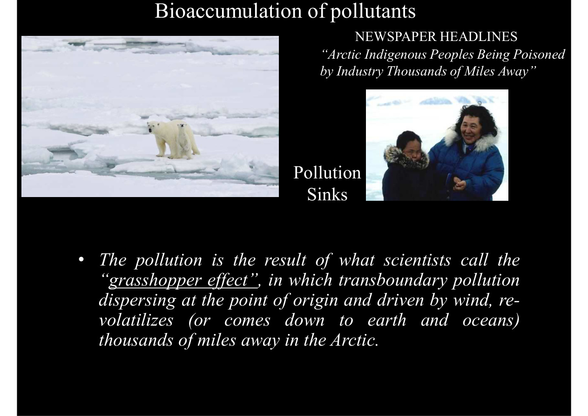
Global Media Coverage of Major Ecological Disasters
- •NEWSPAPER HEADLINES “Arctic Indigenous Peoples Being Poisoned by Industry Thousands of Miles Away” Bioaccumulation of pollutants
Global Media Coverage of Major Ecological Disasters: NEWSPAPER HEADLINES “Arctic Indigenous Peoples Being Poisoned by Industry Thousands of Miles Away” Bioaccumulation of pollutants. This material establishes quantitative limits, operational trade-offs, and core exam principles for Lecture 05.
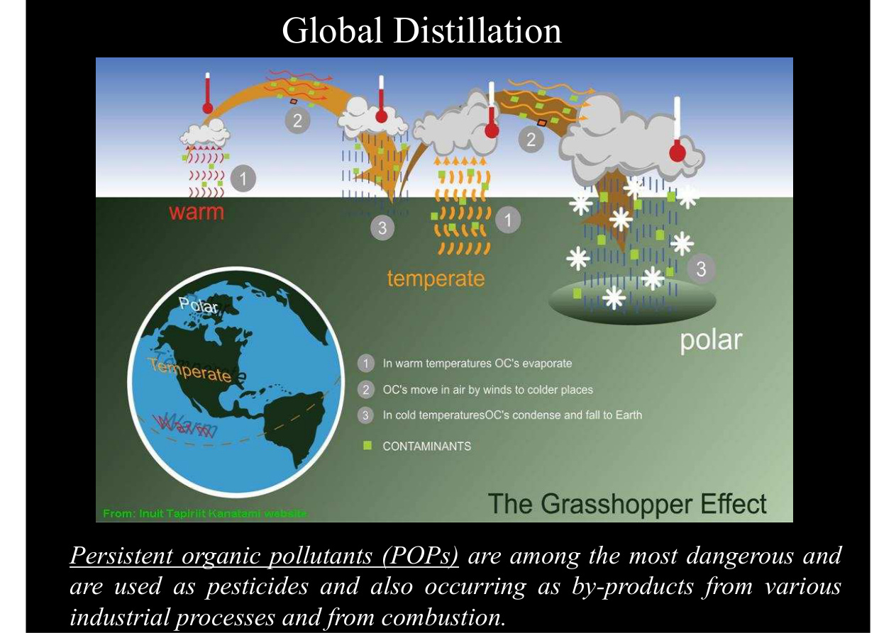
Global Distillation
- •Global Distillation Persistent organic pollutants (POPs) are among the most dangerous and are used as pesticides and also occurring as by-products from various industrial processes and from combustion.
Global Distillation: Global Distillation Persistent organic pollutants (POPs) are among the most dangerous and are used as pesticides and also occurring as by-products from various industrial processes and from combustion. This material establishes quantitative limits, operational trade-offs, and core exam principles for Lecture 05.
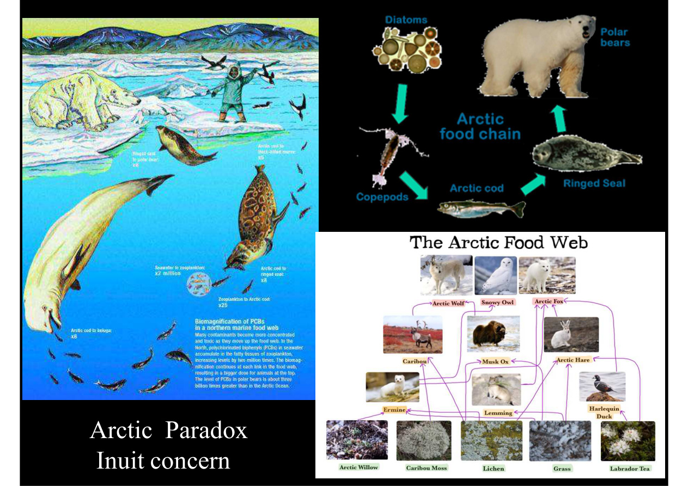
Arctic Paradox
- •Arctic Paradox Inuit concern
Arctic Paradox: Arctic Paradox Inuit concern. This material establishes quantitative limits, operational trade-offs, and core exam principles for Lecture 05.
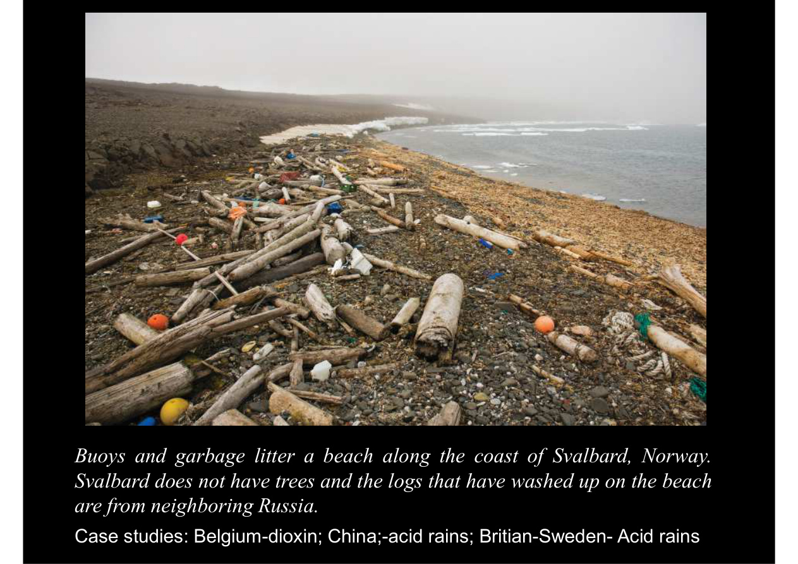
Buoys and garbage litter a beach along the coast of Svalbard, ...
- •Buoys and garbage litter a beach along the coast of Svalbard, Norway. Svalbard does not have trees and the logs that have washed up on the beach are from neighboring Russia. Case studies: Belgium-dioxin; China;-acid rains; Britian-Sweden- Acid rains
Buoys and garbage litter a beach along the coast of Svalbard, ...: Buoys and garbage litter a beach along the coast of Svalbard, Norway. Svalbard does not have trees and the logs that have washed up on the beach are from neighboring Russia. Case studies: Belgium-dioxin; China;-acid rains; Britian-Sweden- Acid rains. This material establishes quantitative limits, operational trade-offs, and core exam principles for Lecture 05.
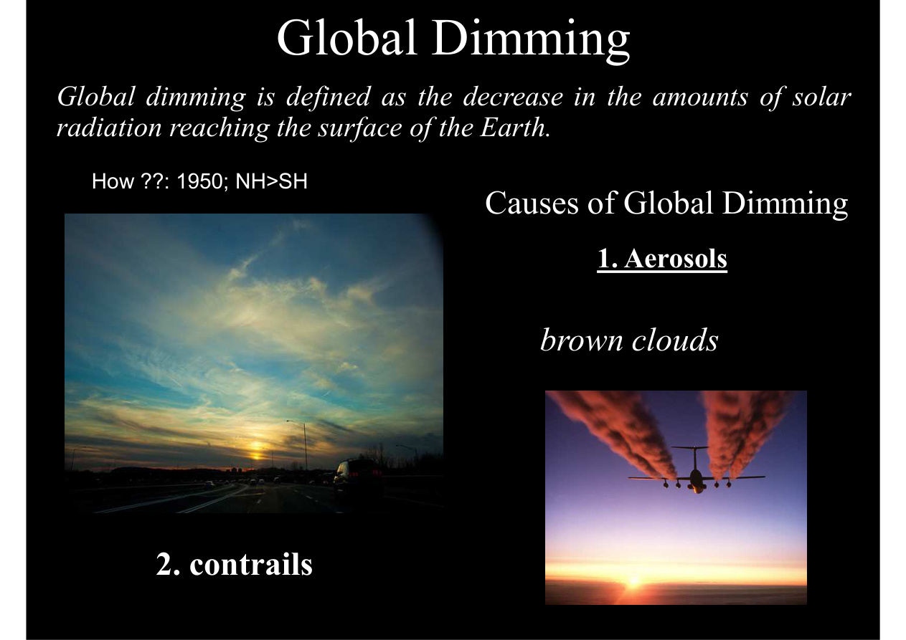
Global Dimming
- •Global Dimming Global dimming is defined as the decrease in the amounts of solar radiation reaching the surface of the Earth. Causes of Global Dimming
Global Dimming: Global Dimming Global dimming is defined as the decrease in the amounts of solar radiation reaching the surface of the Earth. Causes of Global Dimming. This material establishes quantitative limits, operational trade-offs, and core exam principles for Lecture 05.
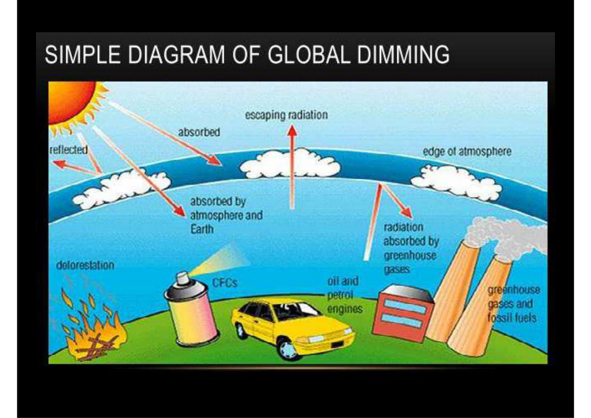
Slide 7
Visual figure slide. See the high-resolution render on the left.
Lecture 05 figure 7 illustrates key empirical observations and visual relationships in Lecture 05. It provides field data, case evidence, or system diagrams that support the quantitative and regulatory concepts taught in this topic.
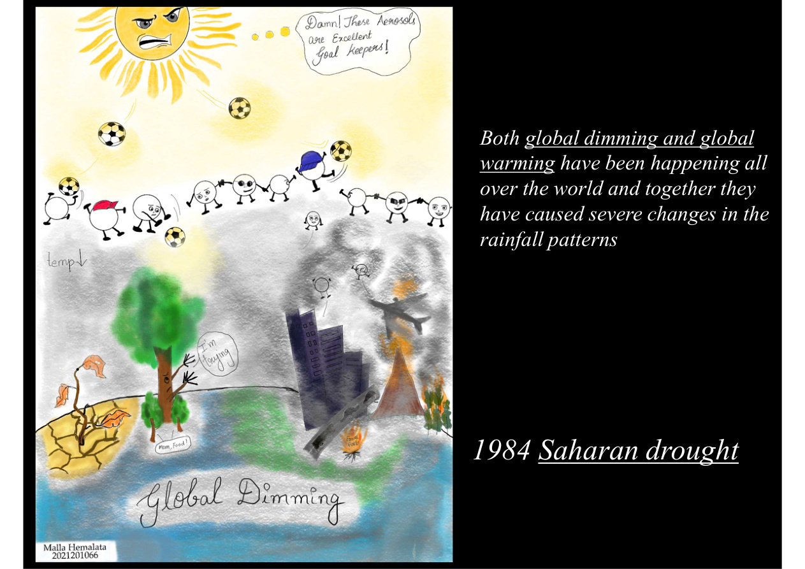
Persistent Organic Pollutants (POPs) and the Stockholm Convention
- •Both global dimming and global warming have been happening all over the world and together they have caused severe changes in the
Persistent Organic Pollutants (POPs) and the Stockholm Convention: Both global dimming and global warming have been happening all over the world and together they have caused severe changes in the. This material establishes quantitative limits, operational trade-offs, and core exam principles for Lecture 05.
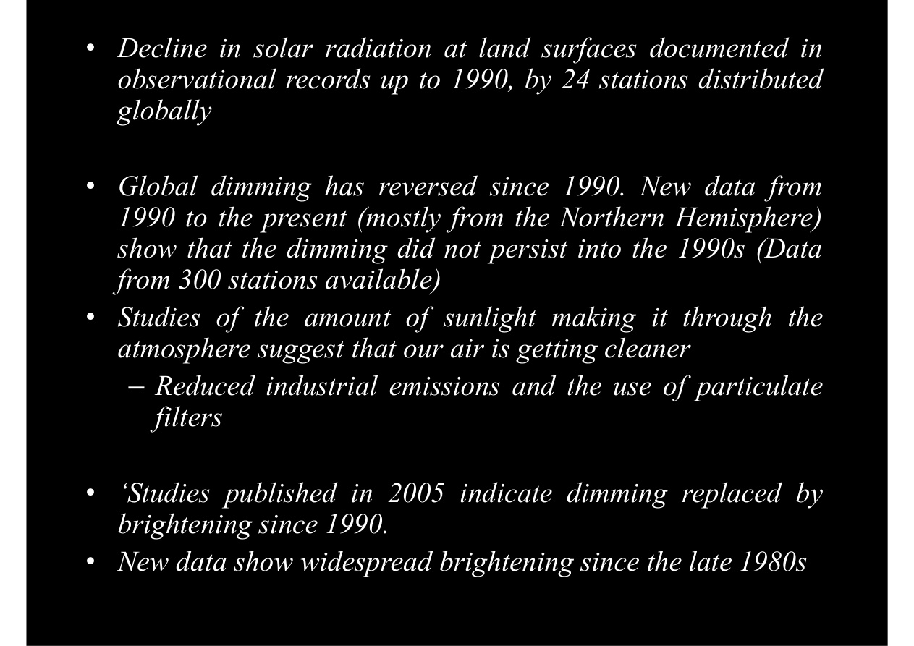
• Decline in solar radiation at land surfaces documented in
- •• Decline in solar radiation at land surfaces documented in observational records up to 1990, by 24 stations distributed globally • Global dimming has reversed since 1990. New data from
• Decline in solar radiation at land surfaces documented in: • Decline in solar radiation at land surfaces documented in observational records up to 1990, by 24 stations distributed globally • Global dimming has reversed since 1990. New data from. This material establishes quantitative limits, operational trade-offs, and core exam principles for Lecture 05.
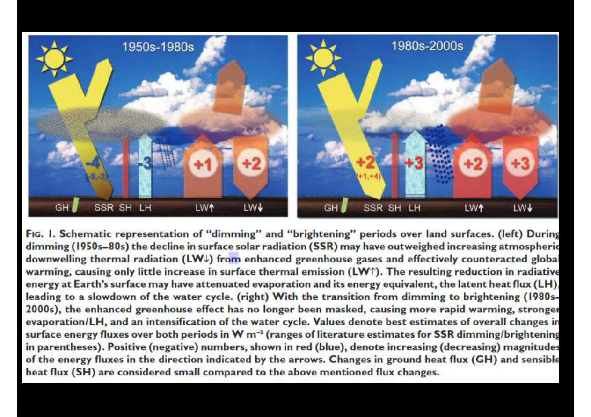
Slide 10
Visual figure slide. See the high-resolution render on the left.
Lecture 05 figure 10 illustrates key empirical observations and visual relationships in Lecture 05. It provides field data, case evidence, or system diagrams that support the quantitative and regulatory concepts taught in this topic.
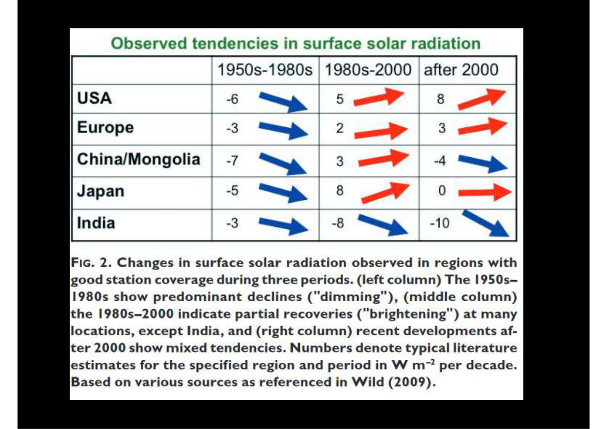
Slide 11
Visual figure slide. See the high-resolution render on the left.
Lecture 05 figure 11 illustrates key empirical observations and visual relationships in Lecture 05. It provides field data, case evidence, or system diagrams that support the quantitative and regulatory concepts taught in this topic.
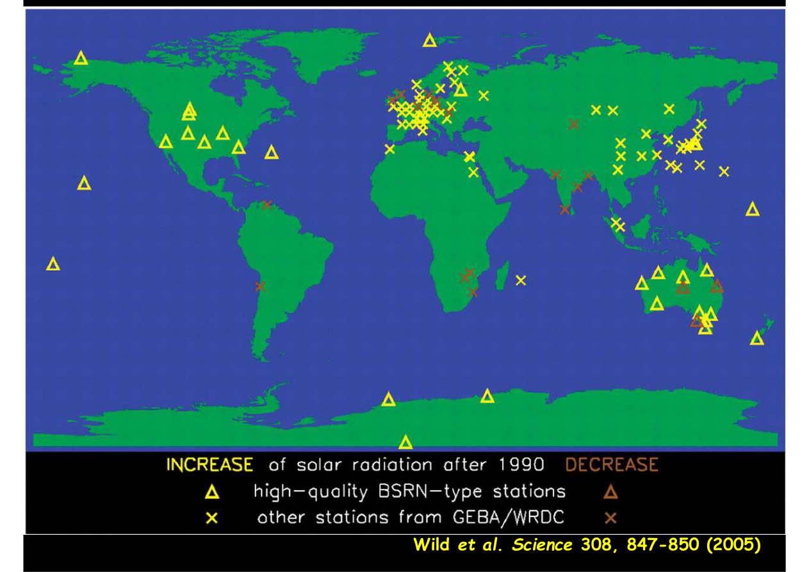
Wild et al. Science 308, 847-850 (2005)
- •Wild et al. Science 308, 847-850 (2005)
Wild et al. Science 308, 847-850 (2005): Wild et al. Science 308, 847-850 (2005). This material establishes quantitative limits, operational trade-offs, and core exam principles for Lecture 05.
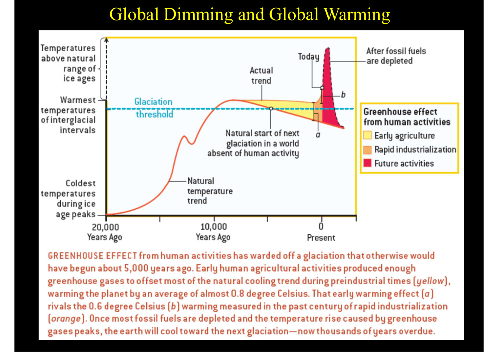
Global Dimming and Global Warming
- •Global Dimming and Global Warming
Global Dimming and Global Warming: Global Dimming and Global Warming. This material establishes quantitative limits, operational trade-offs, and core exam principles for Lecture 05.
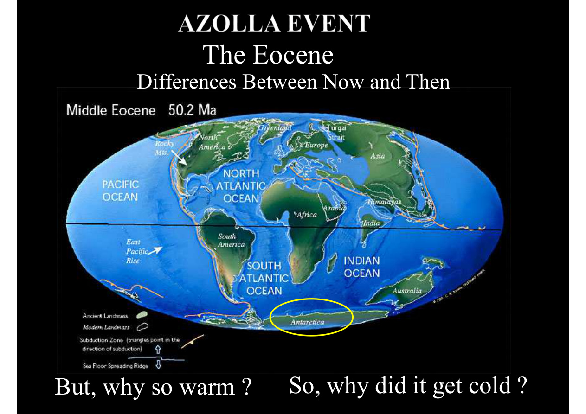
Global Distillation (Grasshopper Effect) in Arctic Food Chains
- •Differences Between Now and Then But, why so warm ? So, why did it get cold ? The Eocene
Global Distillation (Grasshopper Effect) in Arctic Food Chains: Differences Between Now and Then But, why so warm ? So, why did it get cold ? The Eocene. This material establishes quantitative limits, operational trade-offs, and core exam principles for Lecture 05.
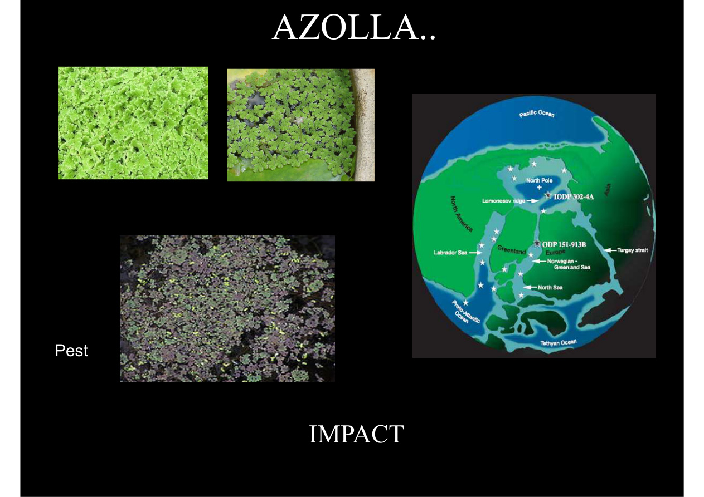
AZOLLA..
- •AZOLLA.. IMPACT Pest
AZOLLA..: AZOLLA.. IMPACT Pest. This material establishes quantitative limits, operational trade-offs, and core exam principles for Lecture 05.
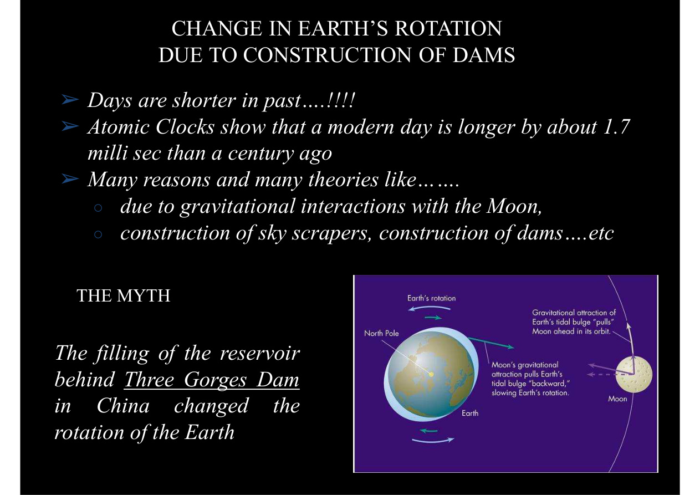
CHANGE IN EARTH’S ROTATION
- •CHANGE IN EARTH’S ROTATION DUE TO CONSTRUCTION OF DAMS ➢Days are shorter in past….!!!! ➢Atomic Clocks show that a modern day is longer by about 1.7
CHANGE IN EARTH’S ROTATION: CHANGE IN EARTH’S ROTATION DUE TO CONSTRUCTION OF DAMS ➢Days are shorter in past….!!!! ➢Atomic Clocks show that a modern day is longer by about 1.7. This material establishes quantitative limits, operational trade-offs, and core exam principles for Lecture 05.
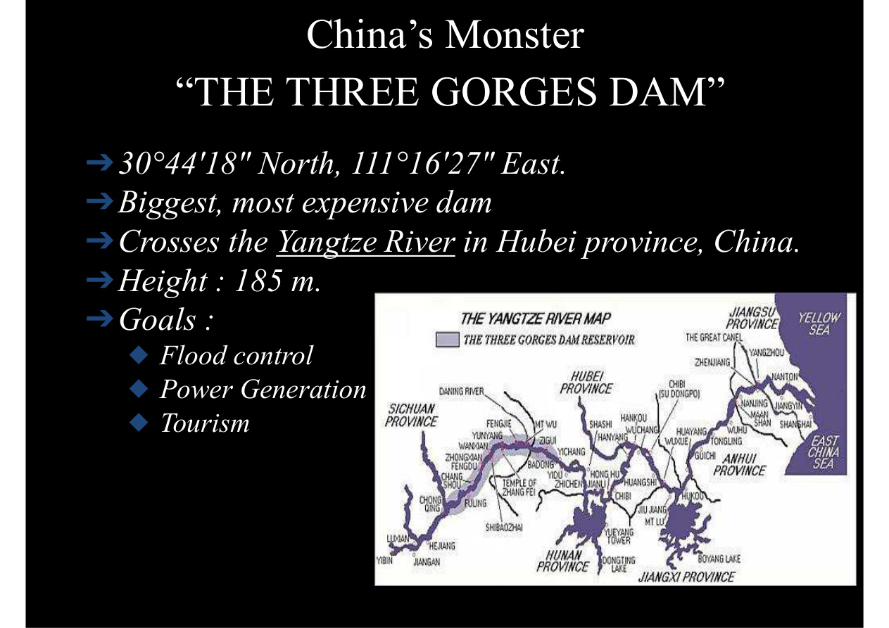
China’s Monster
- •China’s Monster “THE THREE GORGES DAM” ➔30°44'18" North, 111°16'27" East. ➔Biggest, most expensive dam
China’s Monster: China’s Monster “THE THREE GORGES DAM” ➔30°44'18" North, 111°16'27" East. ➔Biggest, most expensive dam. This material establishes quantitative limits, operational trade-offs, and core exam principles for Lecture 05.
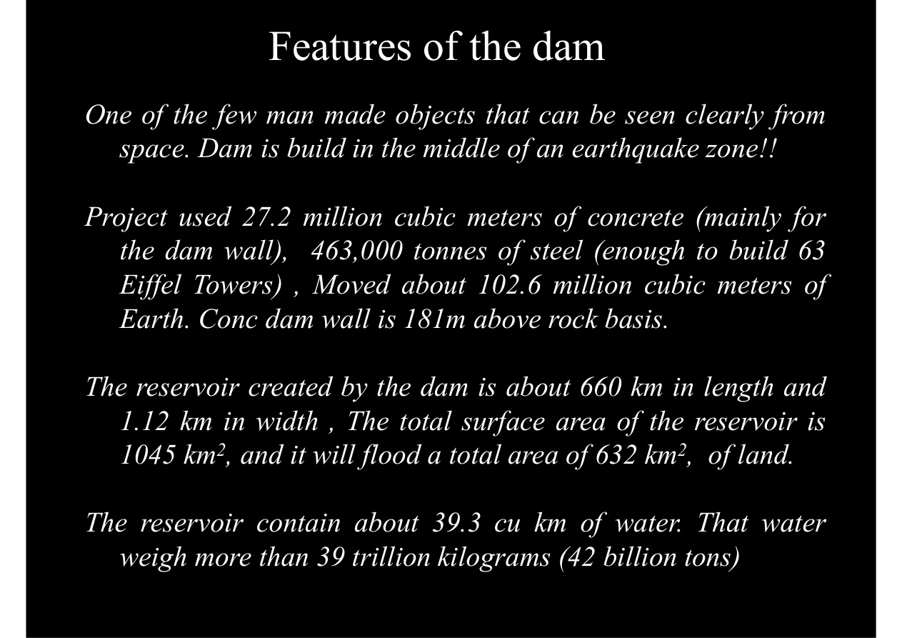
One of the few man made objects that can be seen clearly from
- •One of the few man made objects that can be seen clearly from space. Dam is build in the middle of an earthquake zone!! Project used 27.2 million cubic meters of concrete (mainly for the dam wall), 463,000 tonnes of steel (enough to build 63
One of the few man made objects that can be seen clearly from: One of the few man made objects that can be seen clearly from space. Dam is build in the middle of an earthquake zone!! Project used 27.2 million cubic meters of concrete (mainly for the dam wall), 463,000 tonnes of steel (enough to build 63. This material establishes quantitative limits, operational trade-offs, and core exam principles for Lecture 05.
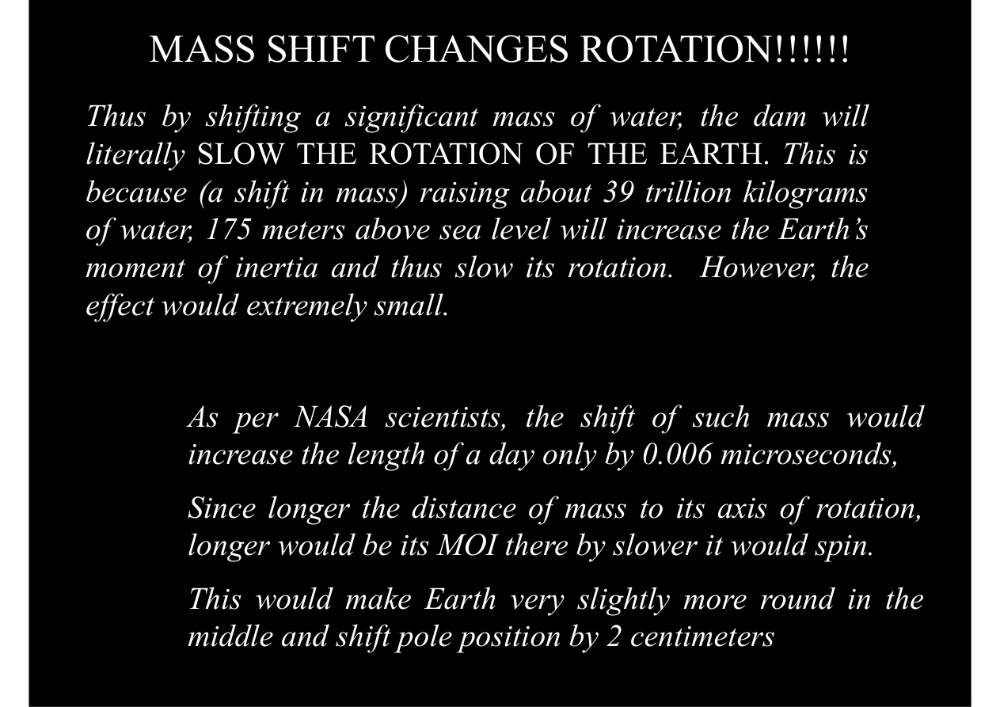
Global Dimming vs Global Warming: Solar Radiation Trends
- •MASS SHIFT CHANGES ROTATION!!!!!! Thus by shifting a significant mass of water, the dam will literally SLOW THE ROTATION OF THE EARTH. This is because (a shift in mass) raising about 39 trillion kilograms
Global Dimming vs Global Warming: Solar Radiation Trends: MASS SHIFT CHANGES ROTATION!!!!!! Thus by shifting a significant mass of water, the dam will literally SLOW THE ROTATION OF THE EARTH. This is because (a shift in mass) raising about 39 trillion kilograms. This material establishes quantitative limits, operational trade-offs, and core exam principles for Lecture 05.
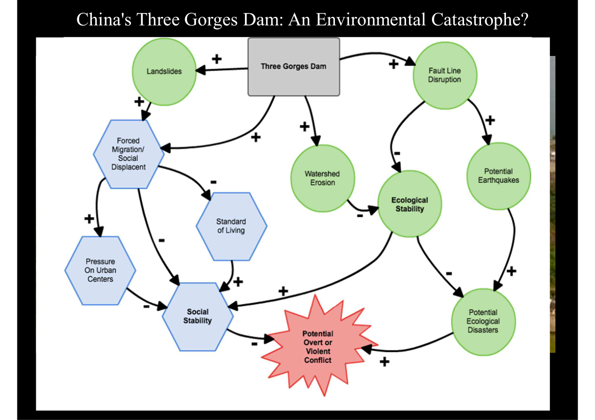
The ship lift at the Three Gorges Dam in China is the world’s ...
- •The ship lift at the Three Gorges Dam in China is the world’s largest China's Three Gorges Dam: An Environmental Catastrophe?
The ship lift at the Three Gorges Dam in China is the world’s ...: The ship lift at the Three Gorges Dam in China is the world’s largest China's Three Gorges Dam: An Environmental Catastrophe?. This material establishes quantitative limits, operational trade-offs, and core exam principles for Lecture 05.
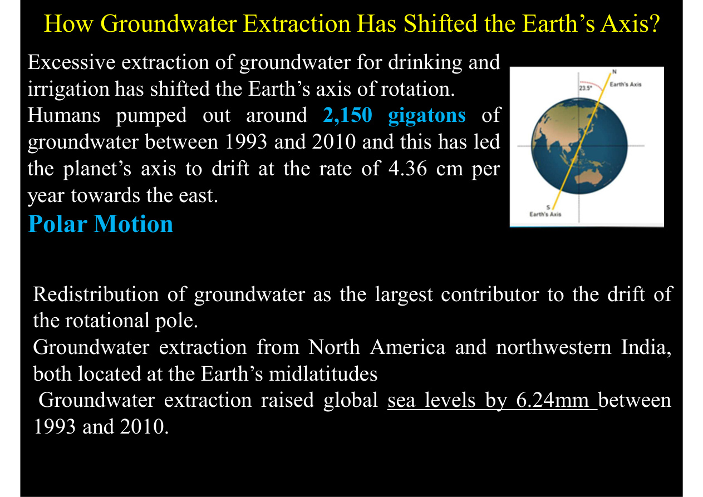
How Groundwater Extraction Has Shifted the Earth’s Axis?
- •How Groundwater Extraction Has Shifted the Earth’s Axis? Excessive extraction of groundwater for drinking and irrigation has shifted the Earth’s axis of rotation. Humans pumped out around 2,150 gigatons of
How Groundwater Extraction Has Shifted the Earth’s Axis?: How Groundwater Extraction Has Shifted the Earth’s Axis? Excessive extraction of groundwater for drinking and irrigation has shifted the Earth’s axis of rotation. Humans pumped out around 2,150 gigatons of. This material establishes quantitative limits, operational trade-offs, and core exam principles for Lecture 05.
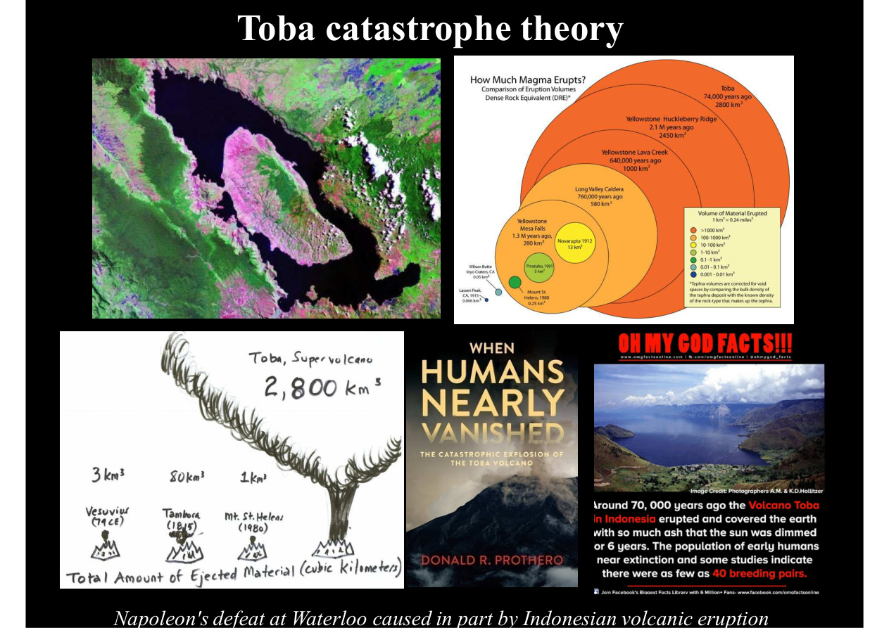
Napoleon's defeat at Waterloo caused in part by Indonesian vol...
- •Napoleon's defeat at Waterloo caused in part by Indonesian volcanic eruption Toba catastrophe theory
Napoleon's defeat at Waterloo caused in part by Indonesian vol...: Napoleon's defeat at Waterloo caused in part by Indonesian volcanic eruption Toba catastrophe theory. This material establishes quantitative limits, operational trade-offs, and core exam principles for Lecture 05.
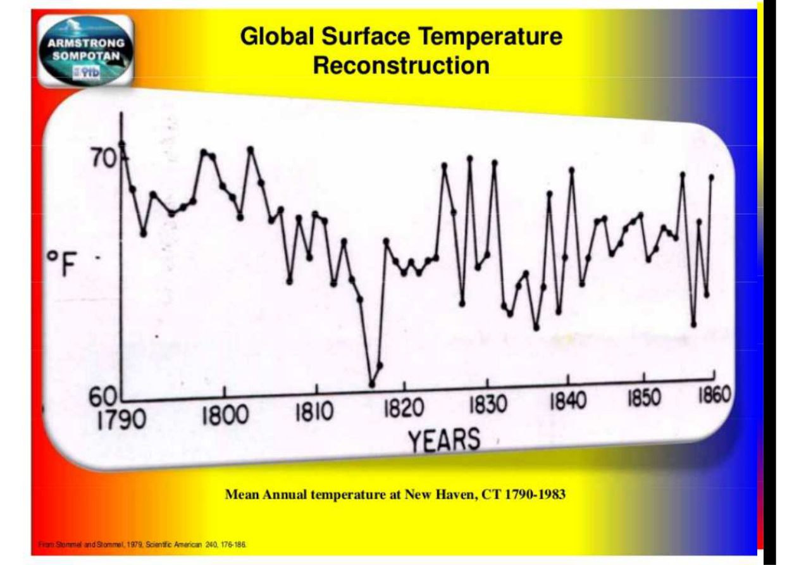
Slide 23
Visual figure slide. See the high-resolution render on the left.
Lecture 05 figure 23 illustrates key empirical observations and visual relationships in Lecture 05. It provides field data, case evidence, or system diagrams that support the quantitative and regulatory concepts taught in this topic.
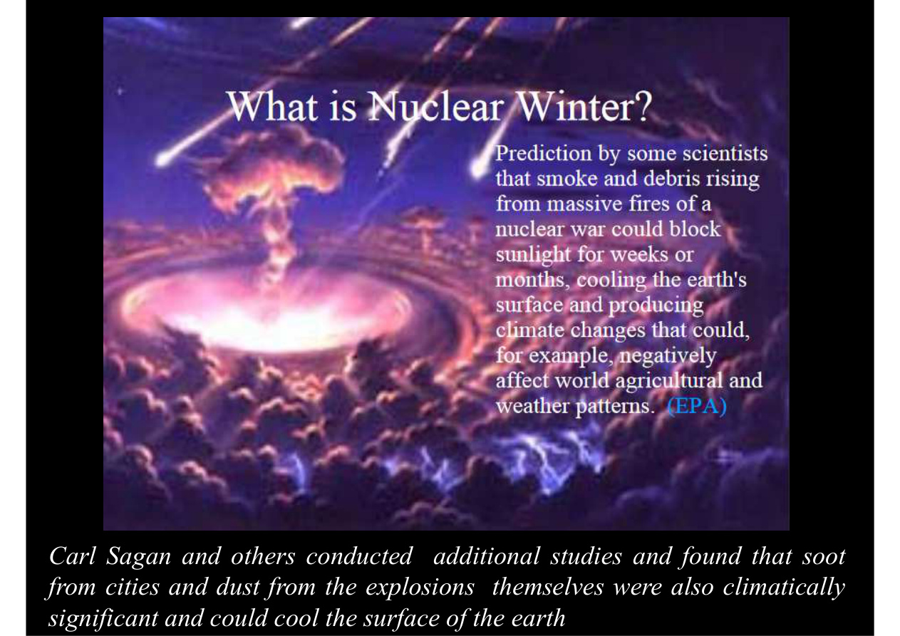
Carl Sagan and others conducted additional studies and found t...
- •Carl Sagan and others conducted additional studies and found that soot from cities and dust from the explosions themselves were also climatically significant and could cool the surface of the earth
Carl Sagan and others conducted additional studies and found t...: Carl Sagan and others conducted additional studies and found that soot from cities and dust from the explosions themselves were also climatically significant and could cool the surface of the earth. This material establishes quantitative limits, operational trade-offs, and core exam principles for Lecture 05.
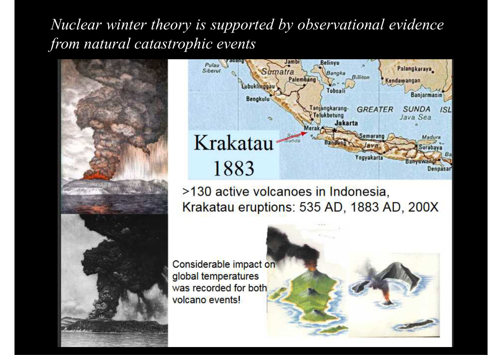
Azolla Event: Eocene CO2 Drawdown and Paleoclimate Cooling
- •Nuclear winter theory is supported by observational evidence from natural catastrophic events
Azolla Event: Eocene CO2 Drawdown and Paleoclimate Cooling: Nuclear winter theory is supported by observational evidence from natural catastrophic events. This material establishes quantitative limits, operational trade-offs, and core exam principles for Lecture 05.
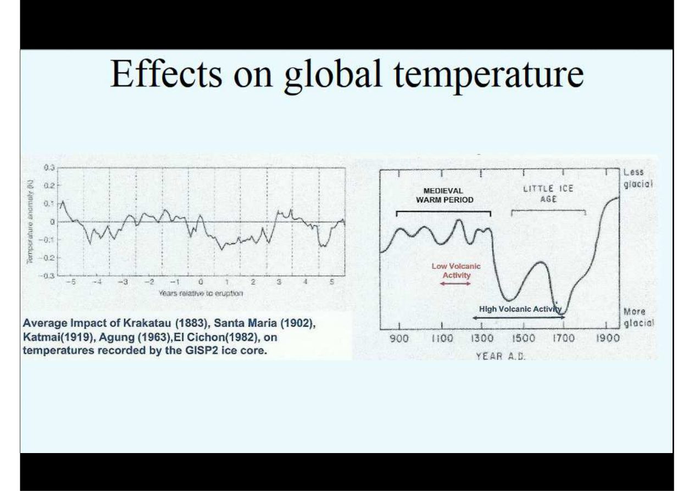
Slide 26
Visual figure slide. See the high-resolution render on the left.
Lecture 05 figure 26 illustrates key empirical observations and visual relationships in Lecture 05. It provides field data, case evidence, or system diagrams that support the quantitative and regulatory concepts taught in this topic.
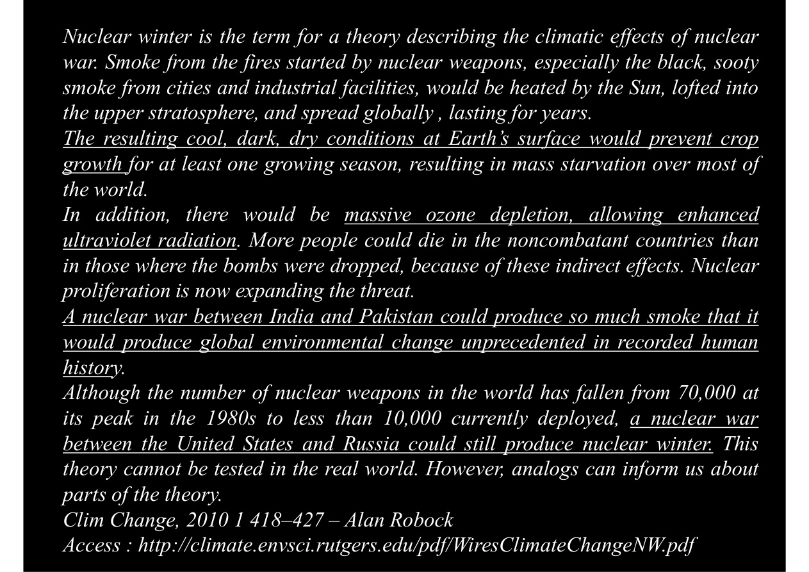
Nuclear winter is the term for a theory describing the climati...
- •Nuclear winter is the term for a theory describing the climatic effects of nuclear war. Smoke from the fires started by nuclear weapons, especially the black, sooty smoke from cities and industrial facilities, would be heated by the Sun, lofted into the upper stratosphere, and spread globally , lasting for years.
Nuclear winter is the term for a theory describing the climati...: Nuclear winter is the term for a theory describing the climatic effects of nuclear war. Smoke from the fires started by nuclear weapons, especially the black, sooty smoke from cities and industrial facilities, would be heated by the Sun, lofted into the upper stratosphere, and spread globally , lasting for years. This material establishes quantitative limits, operational trade-offs, and core exam principles for Lecture 05.
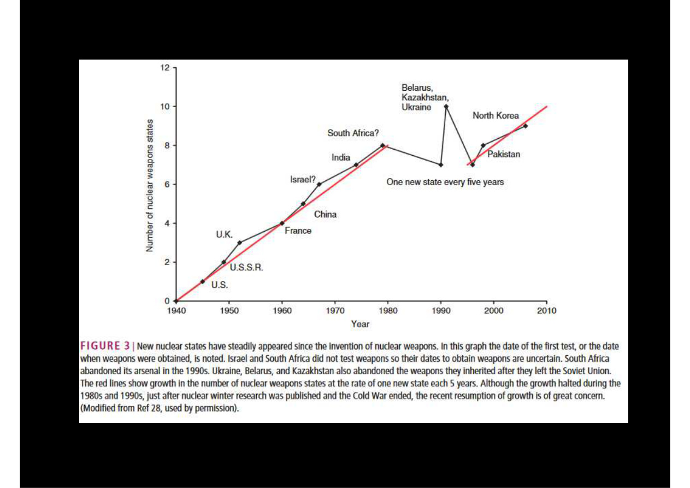
Slide 28
Visual figure slide. See the high-resolution render on the left.
Lecture 05 figure 28 illustrates key empirical observations and visual relationships in Lecture 05. It provides field data, case evidence, or system diagrams that support the quantitative and regulatory concepts taught in this topic.
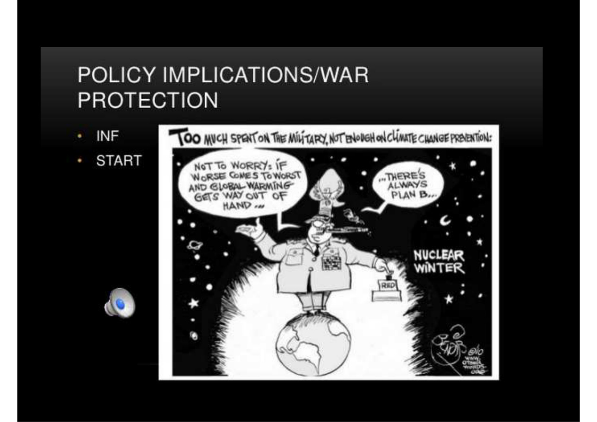
Slide 29
Visual figure slide. See the high-resolution render on the left.
Lecture 05 figure 29 illustrates key empirical observations and visual relationships in Lecture 05. It provides field data, case evidence, or system diagrams that support the quantitative and regulatory concepts taught in this topic.
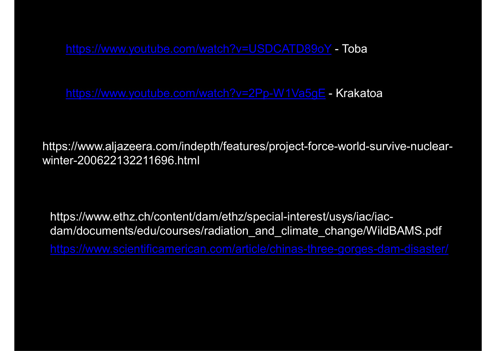
https://www.youtube.com/watch?v=USDCATD89oY - Toba
Visual figure slide. See the high-resolution render on the left.
https://www.youtube.com/watch?v=USDCATD89oY - Toba illustrates key empirical observations and visual relationships in Lecture 05. It provides field data, case evidence, or system diagrams that support the quantitative and regulatory concepts taught in this topic.
️ Toxic Chemical Plume & Exposure Hazard Calculator
Model atmospheric downwind gas dispersion (Bhopal MIC scenario) using the Gaussian Plume Model.
Active recall flashcards
Review definitions, reactions, and governing laws from the lecture slides before flipping.
Exam traps and common pitfalls
Common student misconceptions and subtle distinctions tested in exams.
- Exam trap: Confusing the causes of the London 1952 Smog with Los Angeles Photochemical Smog. London smog was a reducing 'sulfurous' winter smog driven by coal combustion and $SO_2$ trapped by a radiation inversion, NOT automobile photochemical reactions.
- Exam note: Be prepared to describe the runaway exothermic hydrolysis of MIC ($CH_3NCO + H_2O$) and the failure of safety scrubbers and flare towers at UCIL Bhopal.
Concept check quiz
Verify your understanding of core concepts from this lecture deck.
Slide reference gallery
Complete visual reference of all 30 slides with direct links to original presentation files.